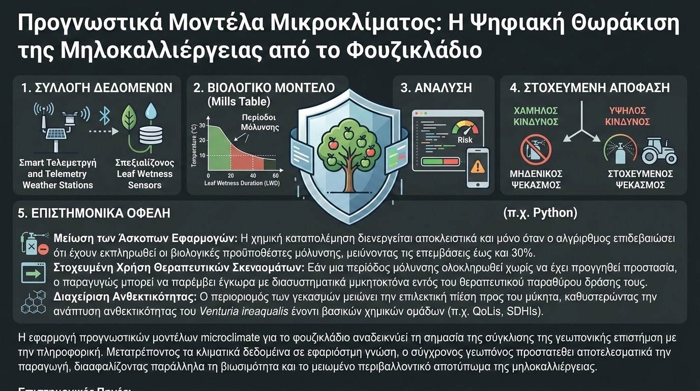

Το φουζικλάδιο της μηλιάς, το οποίο προκαλείται από τον ασκομύκητα Venturia inaequalis, αποτελεί παγκοσμίως τη σοβαρότερη απειλή για τις εμπορικές καλλιέργειες μηλοειδών. Η ασθένεια υποβαθμίζει ποιοτικά τους καρπούς και προκαλεί πρόωρη φυλλόπτωση, εξασθενίζοντας τα δέντρα. Ιστορικά, η αντιμετώπιση του μύκητα βασιζόταν σε προληπτικούς ημερολογιακούς ψεκασμούς, μια πρακτική που αυξάνει κατακόρυφα το κόστος παραγωγής και επιβαρύνει το οικοσύστημα. Η σύγχρονη βιώσιμη γεωργία επιβάλλει τη χρήση Συστημάτων Υποστήριξης Αποφάσεων (Decision Support Systems - DSS) που βασίζονται στην ψηφιακή ανάλυση του μικροκλίματος.
Η βιολογία του παθογόνου είναι άρρηκτα συνδεδεμένη με συγκεκριμένες κλιματικές συνθήκες. Για να πραγματοποιηθεί μια πρωτογενής μόλυνση από τα ασκοσπόρια, απαιτείται η συνύπαρξη δύο παραγόντων: κατάλληλης θερμοκρασίας και επαρκούς Διάρκειας Διαβροχής των Φύλλων (Leaf Wetness Duration - LWD). Επιστημονικά μοντέλα, όπως ο κλασικός πίνακας του Mills (Mills Table) και οι σύγχρονες αναθεωρήσεις του, προσδιορίζουν με ακρίβεια τις ελάχιστες ώρες συνεχόμενης υγρασίας που χρειάζεται ο μύκητας για να διεισδύσει στην επιδερμίδα του φύλλου ανάλογα με τη μέση θερμοκρασία του περιβάλλοντος.

Στο επίπεδο της ψηφιακής γεωργίας, η συλλογή των μεταβλητών αυτών επιτυγχάνεται μέσω τηλεμετρικών αγροτικών μετεωρολογικών σταθμών και εξειδικευμένων αισθητήρων που προσομοιάζουν τη συμπεριφορά της φυλλικής επιφάνειας. Τα δεδομένα αυτά τροφοδοτούνται σε αυτοματοποιημένα scripts (π.χ. αναπτυγμένα σε Python), τα οποία υπολογίζουν διαρκώς το επίπεδο κινδύνου. Όταν η διάρκεια διαβροχής και η θερμοκρασία ξεπεράσουν τα κρίσιμα κατώφλια, το σύστημα καταγράφει μια "περίοδο μόλυνσης" (infection period) και ειδοποιεί άμεσα τον παραγωγό.
Τα επιστημονικά τεκμηριωμένα οφέλη από την ενσωμάτωση μικροκλιματικών προγνωστικών μοντέλων περιλαμβάνουν:
- Μείωση των Άσκοπων Εφαρμογών: Η χημική καταπολέμηση διενεργείται αποκλειστικά και μόνο όταν ο αλγόριθμος επιβεβαιώσει ότι έχουν εκπληρωθεί οι βιολογικές προϋποθέσεις μόλυνσης, μειώνοντας τις επεμβάσεις έως και 30%.
- Στοχευμένη Χρήση Θεραπευτικών Σκευασμάτων: Εάν μια περίοδος μόλυνσης ολοκληρωθεί χωρίς να έχει προηγηθεί προστασία, ο παραγωγός μπορεί να παρέμβει έγκαιρα με διασυστηματικά μυκητοκτόνα εντός του θεραπευτικού παραθύρου δράσης τους.
- Διαχείριση Ανθεκτικότητας: Ο περιορισμός των ψεκασμών μειώνει την επιλεκτική πίεση προς τον μύκητα, καθυστερώντας την ανάπτυξη ανθεκτικότητας του Venturia inaequalis έναντι βασικών χημικών ομάδων (π.χ. QoLIs, SDHIs).
Η εφαρμογή προγνωστικών μοντέλων microclimate για το φουζικλάδιο αναδεικνύει τη σημασία της σύγκλισης της γεωπονικής επιστήμης με την πληροφορική. Μετατρέποντας τα κλιματικά δεδομένα σε εφαρμόσιμη γνώση, ο σύγχρονος γεωπόνος προστατεύει αποτελεσματικά την παραγωγή, διασφαλίζοντας παράλληλα τη βιωσιμότητα και το μειωμένο περιβαλλοντικό αποτύπωμα της μηλοκαλλιέργειας.